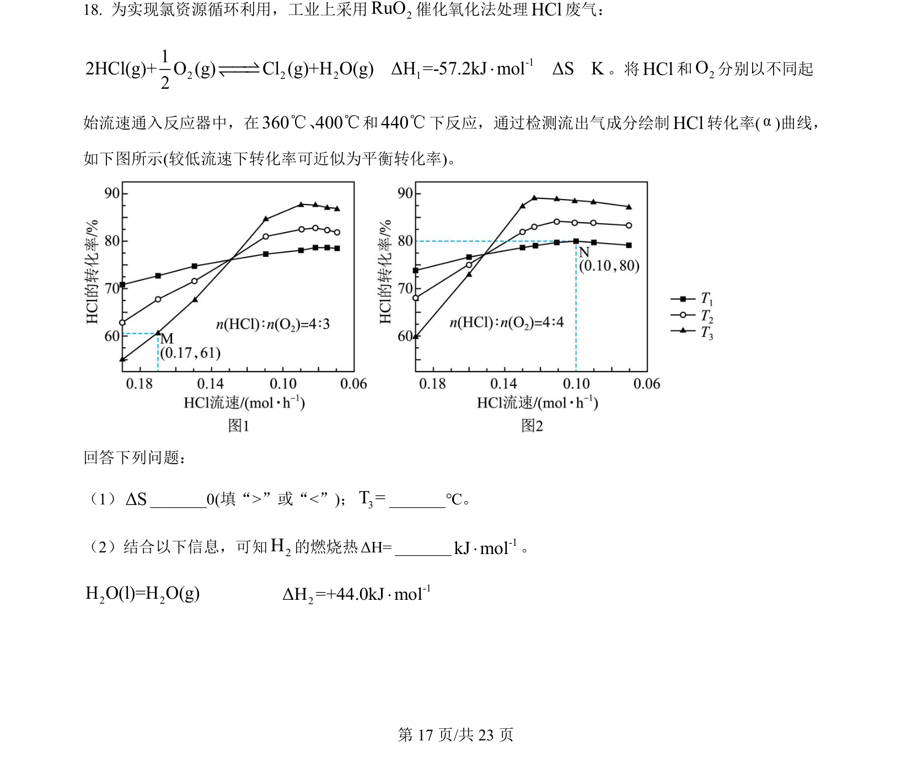
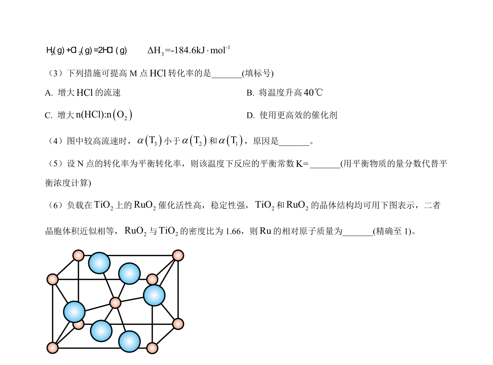
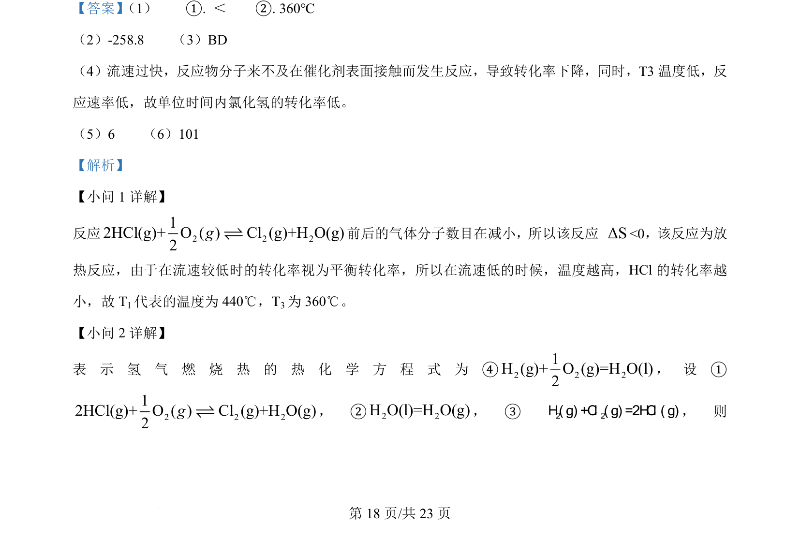
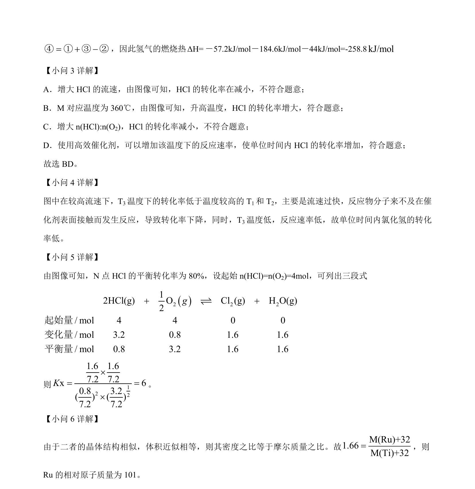

2024-辽宁-18
吉林2024卷辽宁不分题18题型解答难中
考点：反应热 燃烧热 熵变 化学平衡
题面


摘要
本题以HCl催化氧化为背景，考查反应热计算、燃烧热概念、熵变判断及图像分析。
关联考点
答案与解析


📄 原 PDF 第 17 页：素材/真题/吉林/2008-2024·（吉林）化学高考真题/2024年高考化学试卷（辽宁）（解析卷）.pdf
题干文本
- 为实现氯资源循环利用，工业上采用2RuO催化氧化法处理HCl废气：
-12 2 2 112HCl(g)+ O (g) Cl (g)+H O(g)ΔH =-57.2kJ molΔS K2׈ˆ †‡ˆ ˆ。将HCl和2O分别以不同起
始流速通入反应器中，在360 400℃℃、和440℃下反应，通过检测流出气成分绘制HCl转化率(α)曲线，
如下图所示(较低流速下转化率可近似为平衡转化率)。
回答下列问题：
（1）ΔS_0(填“>”或“<”)；3T =_℃。
（2）结合以下信息，可知2H的燃烧热ΔH=_ -1kJ mol×。
2 2H O(l)=H O(g) -12ΔH =+44.0kJ mol×
解析文本